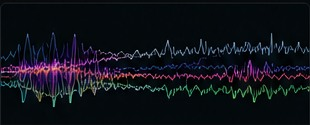
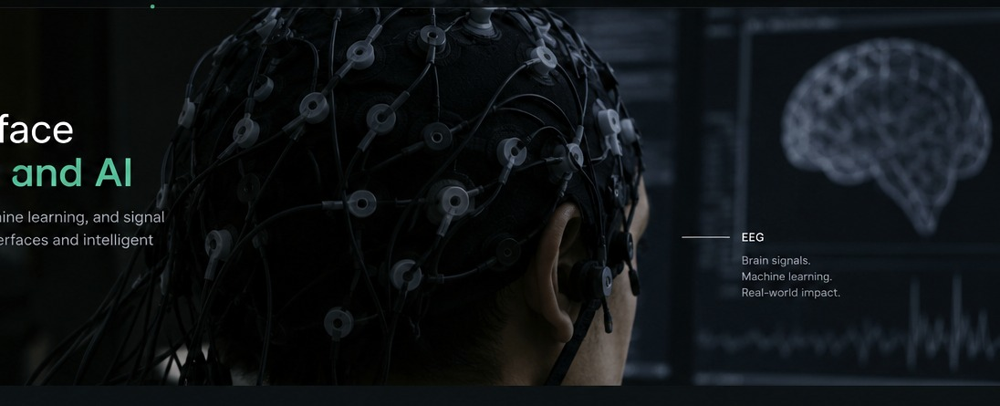
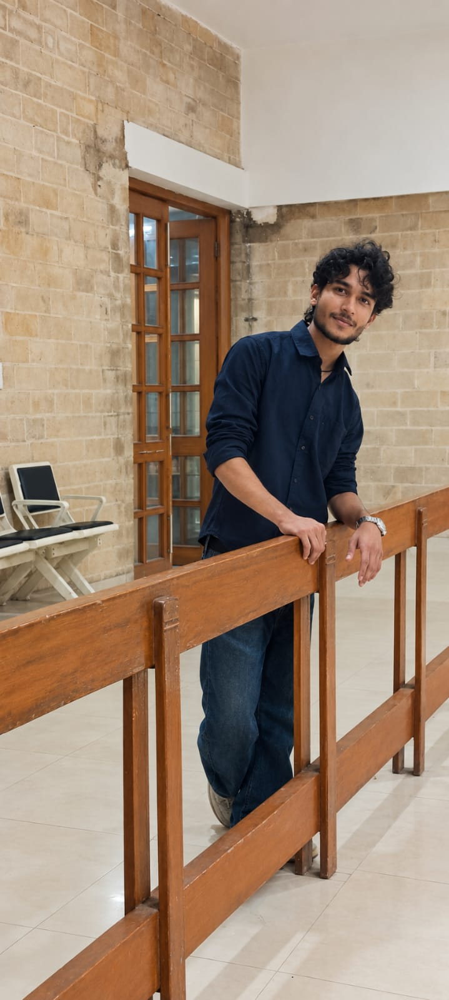
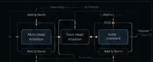
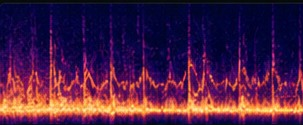
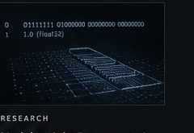

EEG-Based Brain–Computer Interface
EEG acquisition and signal-processing workflow exploring classification and simulated assistive control with a multi-channel setup.

I work across machine learning, neuroscience, and signal processing, with a focus on brain–computer interfaces and systems that connect models to real-world interaction.
EEG · Neural signals · Applied machine learning

Ansh Shrivastava · AI/ML Research
I'm Ansh Shrivastava, a computer science student focused on AI and machine learning, with a strong interest in independent research and building systems beyond a notebook.
My work spans neural networks, EEG-based interfaces, signal processing, and applied AI. I enjoy understanding the mechanics beneath a model, testing ideas through experiments, and connecting software to real-world systems.
Real projects, implementation notes, and research questions. Each entry can link to source code, a paper, or a future interactive demo.

EEG acquisition and signal-processing workflow exploring classification and simulated assistive control with a multi-channel setup.

Implementations of neural-network components and transformer architectures to inspect tensor operations, training dynamics, and design choices.

An audio-classification workflow using pretrained embeddings, with attention to dataset quality, class balance, leakage prevention, and evaluation.

An experimental study of floating-point representations and controlled bit changes, examining their effects on layer outputs and model behavior.
My research explores technical questions through experimentation, analysis, and evidence-driven investigation. Below are my published work and current research in the publication process.
Explore my published research, including its methodology, findings, and contribution to the field.
A current research project undergoing the publication review process. Further details will be shared when appropriate.
Open to thoughtful discussions, research collaboration, and engineering opportunities.